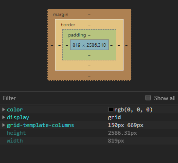
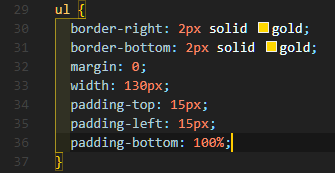
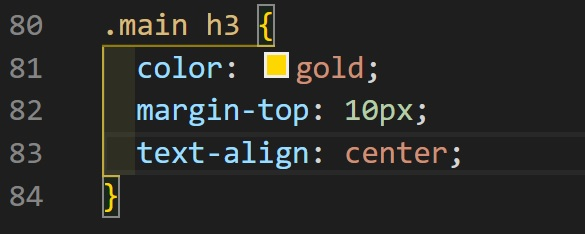

CSS는 Cascading Style Sheets의 약자로, HTML의 요소들이 외부에 어떻게 표현되는가를 정의할 때 사용하는 언어이다.
약간 차이점이 존재하겠지만, python이나 c++과 같은 언어에서 함수를 정의하듯이 CSS 문서안에 속성을 정의하는 것이라고 생각하면 편하다.
아래의 사진은 실제 이 Page에 적용된 CSS 문서의 모습이다.
selector 즉, 선택자는 CSS를 사용하기 위한 기본적 요소로, style를 적용할 대상을 지목하는 역할을 한다.
예를들어 HTML 문서의 Tag중 a Tag에 style을 적용하기 위해서 아래의 사진과 같이 적어주는 것을 선택자를 이용했다고 한다.

위의 사진에서 대괄호 안에 들어있는 코드가 바로 declaration이라 불리는 요소이다. 이 declaration은 style의 실질적 내용을 담당하는 부분이다. 그리고 대괄호 부분을 property라고 하는데, 영단어의 뜻 그대로 "속성"이라는 의미이다. 대괄호안에 들어가는 것을 property라고 불러주는 것이다.
CSS에는 elements의 크기를 지정하는 여러 단위가 있다. 그중 대표적인 단위를 보자면, "px, -%, -fr"이 있다.
px : pixel을 뜻하는 코드로, 앞에 원하는 크기의 수를 적어주면 된다.
-% : %는 브라우저창의 크기에 맞게 %를 정해주는 코드로, 화면이 어떤 크기든 그 크기의 맞는 비율로 elements를 보여준다. 예를들어 500px의 크기인 화면에
100%로 지정하면 500px만큼의 크기로 보여주고, 10%로 지정하면 50px로 보여주는 방식이다.
-fr : %와 비슷하게 화면 크기에 맞추어 크기가 변하지만, 2개 이상의 대상에 이용하며, 각자의 상대적인 비율에 맞추어 보여준다. 예를들어 1fr의 elements와 2fr의 elements를 지정하면,
1:2 비율로 보여주는 것이다. 만약, 1fr과 1fr로 할경우는 1:1 비율로 보여준다.
border 와 margin, padding은 화면구성의 기본적 요소이다. border는 elements의 테두리이고 margin은 테두리 바깥부분의 두께이며,
padding은 border와 elements의 사이 두께이다. CSS 디자인의 제일 기본이 되는 속성중 하나이기 때문에 잘 알아둘 필요가 있다.
아래의 사진들은 직관적으로 구조를 볼 수 있는 예시로, 이 Page의 검사기능을 이용하면 볼 수 있는 장면과 요소들을 변경하는 방법에 대한 예시이다.
 
이 내용은 HTML 카테고리에 들어가면 있는 내용이지만, CSS에서 매우 중요한 요소중 하나이기에 설명을 추가한다. div 와 span은 HTML을 공부했다면 알겠지만, 단독적으로 사용했을때 아무런 기능이 없이 그저 Tag들을 묶어주는 역할만 한다. 따라서 div 와 span은 CSS를 위해서 만들어진 Tag라는 것을 유추할 수 있다.
에를들어 Page에 있는 모든 elements가 아닌 일부내용 즉, 부분적인 elements에 style을 변경하고 싶을때 사용한다.
물론 div 와 span을 활용하기 위해서는 Class, id와 같은 속성지정 tag도 이용할 줄 알아야 비로소 제대로된 활용을 할수있다.
아래의 사진은 이 Page에 적용된 실제 코드이다.


위에 보이는 사진중 왼쪽사진은 HTML 문서의 코드다. 사진을 보면, div Tag의 시작부분 옆에 id로 속성정의를 해주고, div Tag를 닫아준것이 보인다. 그리고 그 옆의 사진인 오른쪽 사진은 이 Page의 mainstyle.css의 속성정의 이다. 해석해보자면, #은 id를 선택자로 지정할때 사용하며, meadby라는 id의 색상을 gold로 지정한다 라는 의미이다.
참고로, 선택자에서 HTML Tag는 다른것 없이 바로 태그명을 적어주고, class는 앞에 .을 붙여사용하며, 미디어 쿼리에서는 @를 붙여 구별한다. 그리고 이것이 적용되어 실제 이 Page의 하단부에 gold 색상으로 made by. TakeALook라고 적힌 부분을 찾아볼수있다.
grid 구조는 우리가 평소에 볼수있는 Page들의 구조를 구현할 수 있게 해주는 매우 할용성 높은 구조이다. 이전 까지는 카테고리와 본문 구조를 나누기 위해서 표를 만들어 억지로 구현했지만, grid 구조에 의해서 간편하게 만들수있다.
grid 구조를 이용하기 위해서는 div Tag를 이용해야한다. 구조를 나누어 줄 부분들을 각자
div로 묶어주고, 또 그 묶어준 Tag들을 다시한번 div를 이용하여 하나로 묶어준다. 그리고 제일 바깥쪽 div Tag에 grid라는 id를 부여하면 된다.
그 다음부터는 자신이 계획한 대로 CSS를 수정해주면 된다. 아래의 사진은 이 Page의 실제 grid Tag 코드이다.


mediaquery는 grid와 비슷한 맥락으로 만들어진 기술로, 화면크기에 따른 WEB의 반응을 구현한 좀 더 동적인 WEB을 만드는 것을 도와준다. mediaquery의 장점은 다양한 기종에 맞춤 구조를 구현 할 수 있다는 점이다. 만약 화면이 작은 디바이스로 WEB을 접속한다면, 작은 화면에 특화된 구조를, 화면이 큰 디바이스로 접속한다면, 큰화면에 맞춘 구조를 바로바로 구현할수있다.
mediaquery를 이용하기 위해서는 조건을 걸어주어야 한다. 아래의 사진은 CSS 문서에 mediaquery 조건을 정의한 모습이다.
코드에 대한 해석을 좀 하자면, @media가 mediaquery의 조건이라는 것을 알려주는 selector이고 바로옆에 (max-width: -px)은 조건을 의미한다. 사진속의 조건은
화면이 800px보다 작다면 이라는 뜻이다. 그리고 그 조건안에 #grid가 들어갔는데 그 의미는, 이 조건에 부합하는 경우 #grid에 대해 코드를 실행한다는 뜻이다.
실제로 이 사진속 코드가 적용된다면 800px보다 작은 화면의 디바이스로 접속하거나, 화면을 그 이하의 수치로 줄였을 때 #grid에 정의된 구조가 단순 block 구조가 된다.
그리고, 다시 화면을 800px 이상으로 늘리면 #grid에 정의된 조건이 살아난다. 이처럼 유동적인 화면을 구현하는것이 mediaquery이다.

이 글은 필자가 github에 업로드 할때 격은 것을 공유하기 위한 글이다. 보통 서버를 가지고 있는 사람이 아니라면, localhost를 이용하여 수정을 한다. 그리고
수정한 것이 localhost에서 잘 작동되는 것을 보고 github로 업로드한다. 하지만, github는 실제 서버를 이용하는 것이기 때문에 localhost에서는 되더라도 약간의
적용방식의 차이로 작동이 안되는 경우가 있다. 그럴때는 대부분 코드끼리의 부모&자식 속성의 충돌이 일어나 적용되지 않는 경우이다. 그런점을 잘 유의하여 코드를 짜줘야
나중에 큰규모로 코드체인지를 하더라도 간편하게 문제를 잡아낼수있다. 여기서 부모&자식 속성에 대하여 모를수도 있기때문에 설명하자면, 만약 body Tag에 class를 a라 하고
body Tag에 종속된 p Tag를 class b로 정의한다면, body가 부모, p가 자식 속성이 되어 자식속성에 class를 지정하더라도 부모의 class에 영향을 받게된다. 해결방법은
부모 class에 속한 Tag와 같은 식으로 지정하여 style을 변경하면 정상적으로 적용된다. 아래의 사진은 이러한 방식으로 적용한 예시이다.
